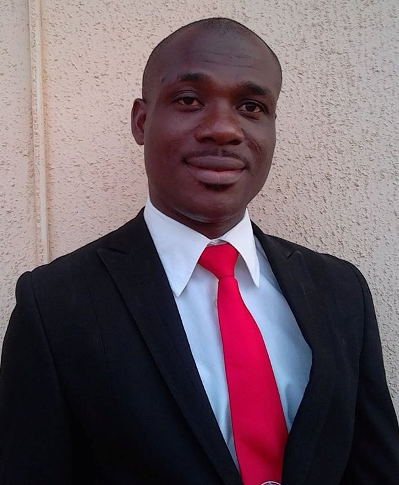

Management Team

Engr. Afangideh Ikakke Destiny
Fonder/CEO
Engr. Afangideh is the pioneer chairman/CEO of Destech Ltd and Life Success Global Business Concept. He is
responsible for the entire development, designing and development activities. He has a wide experience in
Business Management and Procurement.
He added a unique touch to the idea of business development especially with his broad knowledge in IT
business and consultancy.
As the Chairman/CEO, His role is to align and drive the company's strategy to the Nigerian and International
market in order to attract potential and retain current clients.
He is a successful entrepreneur who has passion for empowering people emerging solutions and via enhancing
their businesses. He has worked relentlessly to see the company is where it is today and to take it to
greater heights. He unerringly knows how to bridge the gap between business and IT. He has extensive
advisory experience on issues of strategy driving performance improvement, change management, organizing
building and human capital development.
His ability to manage people and resources as well as promoting human capacity is the key to the development
of the company and its network of clients. To him, adding value to
lives is a God-given passion and Life Success Business Global Concept and Destech Nigeria is the ultimate
medium to achieve it. He is Member Nigerian Society of Engineers (MNSE) and a registered Engineer with the
Council for the Regulation of Engineering in Nigeria

Mr Osahon Philip
Co-founder/MD
Mr. Philip Osahon is a co-founder of Life Success Global Business Concept who shares like vision with the
chairman. His innovative approach and business principles have been instrumental to the coordination of the
affairs of the company since been met by the chairman. He is a strong believer of personal development,
consistency and competence.
He is responsible for driving sales, growth, strategy and business development for new markets. These are
just a few of the fortes he adds to the company which has since been a plus to the overall advancement of
the company. He graduated with top class (second class upper) from Federal University Of Technology Minna,
Niger State. He has spent over 7years with Angel crown ICT and has a deep appreciation doing business with
Life Success Global Business Concept.

Engr. Umoeda Ukpono
PROJECT MANAGER
Mr Umoeda serves as the Operation Manager since the inception of the Company. He has enriched the Company
with his technology background and over 12years of valuable professional
experience in the exciting space of Information Technology. His experience encompasses areas of Application
and Software development, creation of strategic alliances,
business development, and strategic planning. He has various years of experience in project management, Web
Design and Systems Engineering.

Mr. Edimo Etim
OPERATION MANAGER
Leadership, project management, technical prowess and marketing know-how are inherent skills that one
cultivates over time with hands-on experience.
Edimo is a graduate of University of Abuja with a degree in Educational Management and a comprehensive
training in VSAT technology with over 5years experience
in the Information Technology/Telecoms industry. Edimo has had the fortune of working on a number of
projects that has had positive impact on the industry.
A trained expert that is very proficient in software packages with a varying range of work experience within
the IT industry ranging from the Electro- Bond Systems where he was
in charge of Network design, planning and implementation. He has deployed his vast experience in both
material and project management in boosting the formulation and
implementation of our company’s operational policies. He ensures that the high standard of the quality of
our packages are maintained.